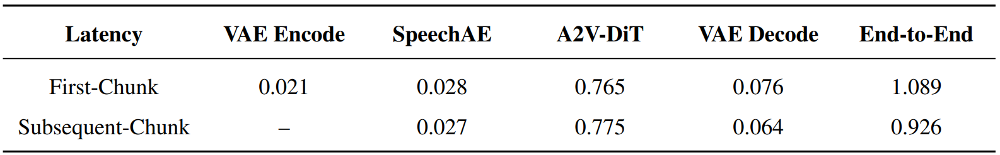
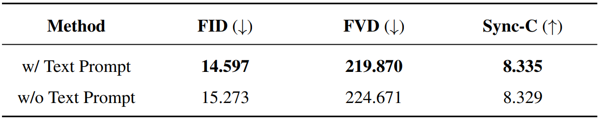
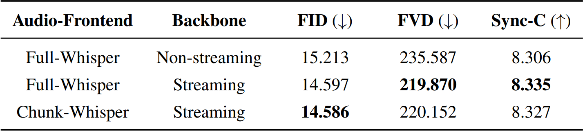
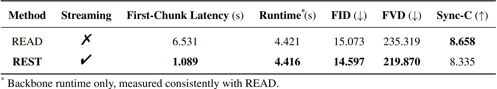

Table R1.
Sensitivity analysis of the ASD hyperparameters (contrastive weight \(\alpha\) and smoothness weight \(\beta\)) on the HDTF dataset.
The FID, FVD, and Sync-C metrics are reported under different weight configurations.
All training and testing protocols strictly align with the original manuscript to ensure fair comparison.
Best values are highlighted in \(\textbf{bold}\).
R-2KufHyperparameter Sensitivity
Sensitivity to ID-Context Cache Length
Figure R1.
Impact of ID-Context Cache length on generative quality and backbone runtime overhead on the HDTF dataset.
The backbone runtime bars and core evaluation metrics (FID, FVD, and Sync-C) curves are reported across variable cache lengths.
All experimental setups and evaluation pipelines are kept strictly consistent with the original manuscript.
R-2KufR-oTWkShared Concern
Long-time Stability
Figure R2.
Long-time generation stability analysis on the HDTF dataset.
The evolution of major performance metrics (FID, FVD, and Sync-C) is evaluated across extended generation durations.
Each panel illustrates a specific metric, annotated with \(\downarrow\) to indicate lower-is-better and \(\uparrow\) to indicate higher-is-better.
The shaded bands denote the empirical minimum-to-maximum intervals, and the annotated percentages quantify the relative fluctuation span, calculated as the minimum-to-maximum difference divided by the mean.
All experimental and testing procedures are kept strictly consistent with the original manuscript.
R-oTWkSystem Analysis
Latency Breakdown

Table R2.
Detailed latency breakdown of the REST framework.
All experimental parameters are maintained strictly consistent with the main manuscript.
Inference is evaluated on a single A100 GPU via a chunk-by-chunk streaming paradigm, generating videos at a \(512 \times 512\) resolution with 8-step inference sampling and a \(1\)-second chunk duration.
The rows delineate the computational overhead for the first chunk versus subsequent chunks during streaming inference.
The columns decompose the time cost across individual modules: VAE Encode, SpeechAE (inclusive of the Whisper encoder), A2V-DiT, VAE Decode, and the overall end-to-end pipeline.
\((-)\) indicates that reference image encoding is bypassed for subsequent chunks, facilitated by the ID-Sink mechanism.
R-oTWkAblation
Text-Prompt Ablation

Table R3.
Quantitative ablation of text prompting on the HDTF dataset.
The row labeled w/ Text-Prompt reports the performance of the default configuration with text prompts.
The row labeled w/o Text-Prompt presents the ablated variant where the text prompt is strictly zeroed out while all other components remain unchanged.
The columns detail the corresponding FID (\(\downarrow\)), FVD (\(\downarrow\)), and Sync-C (\(\uparrow\)) metrics.
All inference settings are kept strictly consistent with the original manuscript, with \(\textbf{bold}\) denoting better performance.
R-a5nZStreaming Front End
Streaming Audio Front-End / Backbone Comparison

Table R4.
Quantitative comparison of Whisper-based audio frontends and backbone modes on the HDTF dataset.
The Full-Whisper frontend denotes the frontend utilizing the complete global audio context, whereas Chunk-Whisper represents whisper embeddings extracted via a true chunk-by-chunk streaming paradigm, precluding history or future context.
Streaming backbone corresponds to the proposed causal architecture, and Non-streaming indicates the parallel network variant composed of identical modules.
The rows evaluate specific frontend-backbone configurations, with the columns detailing the corresponding FID (\(\downarrow\)), FVD (\(\downarrow\)), and Sync-C (\(\uparrow\)) metrics.
All inference pipelines are maintained strictly identical to the main manuscript.
The best performance per metric is highlighted in \(\textbf{bold}\).
R-a5nZComparative Evaluation
Comparison with READ

Table R5.
Quantitative comparison between READ and the proposed REST framework on the HDTF dataset.
The columns detail the streaming capability, first-chunk latency, backbone runtime, and core evaluation metrics (FID \(\downarrow\), FVD \(\downarrow\), and Sync-C \(\uparrow\)).
As clarified in the footnote, the reported runtime is restricted exclusively to the backbone, ensuring identical measurement standards with READ.
All experimental configurations are maintained strictly identical and consistent with the original manuscript and the official guidelines of READ.
Bold highlights the superior value in each metric column.